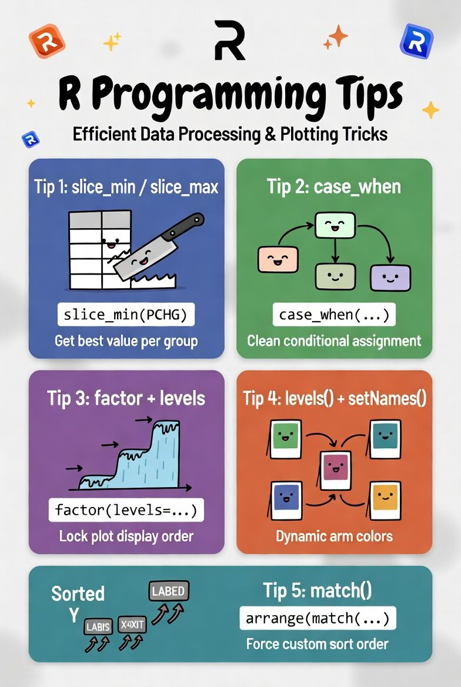
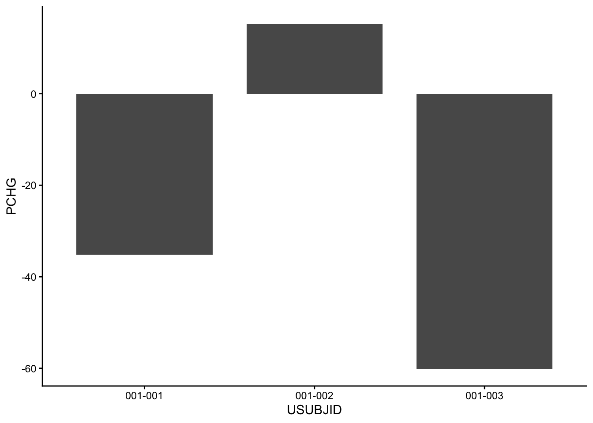
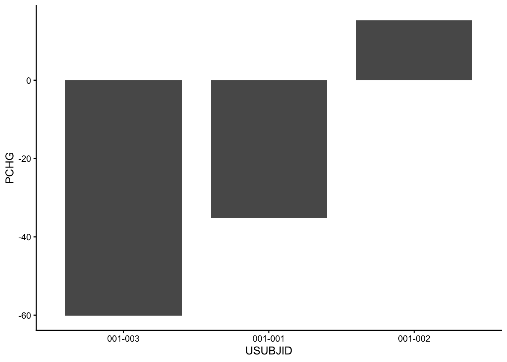

library(tidyverse)
library(tibble)5 R Tips for Efficient Clinical Data Visualization
R
ggplot2
Clinical Trials
Data Visualization
tidyverse
Data Review & Visualization
Five practical R tips I use regularly when building oncology plots — covering slice_min, case_when, factor levels, setNames, and match().

R provides many powerful tools for data processing and visualization. The following five tips cover scenarios I encounter regularly when building clinical plots — getting the best value per group, conditional assignment, locking display order, dynamic named vectors, and sorting by a custom order.
Setup
Tip 1: Get the best value per group — slice_min / slice_max
Scenario: Each patient has multiple PCHG records — keep only the best.
Getting the minimum or maximum value within a group is a common task in clinical trial data processing. For example, selecting each patient’s best tumor response (lowest PCHG) from multiple assessment visits. slice_min and slice_max handle this efficiently in one step.
adrs_raw <- tibble(
USUBJID = c("001-001","001-001","001-001",
"001-002","001-002",
"001-003","001-003","001-003"),
TRTA = c(rep("Treatment A", 3),
rep("Treatment A", 2),
rep("Treatment B", 3)),
AVISIT = c("Week 6","Week 12","Week 18",
"Week 6","Week 12",
"Week 6","Week 12","Week 18"),
PCHG = c(-20.5, -35.2, -28.1,
15.3, 22.4,
-45.0, -60.1, -55.3)
)
adrs_raw# A tibble: 8 × 4
USUBJID TRTA AVISIT PCHG
<chr> <chr> <chr> <dbl>
1 001-001 Treatment A Week 6 -20.5
2 001-001 Treatment A Week 12 -35.2
3 001-001 Treatment A Week 18 -28.1
4 001-002 Treatment A Week 6 15.3
5 001-002 Treatment A Week 12 22.4
6 001-003 Treatment B Week 6 -45
7 001-003 Treatment B Week 12 -60.1
8 001-003 Treatment B Week 18 -55.3Without slice_min, you would need to manually filter — which becomes error-prone when handling ties or missing values.
# ✅ With slice_min: done in one line
best_pchg <- adrs_raw %>%
group_by(USUBJID, TRTA) %>%
slice_min(order_by = PCHG, n = 1, with_ties = FALSE) %>%
ungroup()
best_pchg# A tibble: 3 × 4
USUBJID TRTA AVISIT PCHG
<chr> <chr> <chr> <dbl>
1 001-001 Treatment A Week 12 -35.2
2 001-002 Treatment A Week 6 15.3
3 001-003 Treatment B Week 12 -60.1Tip 2: Conditional assignment — case_when
Scenario: Define the end point of each segment in a plot.
Assigning different values based on different conditions is one of the most common tasks in data processing. ifelse works well for two conditions, but when there are three or more, case_when is a much cleaner choice.
Conditions:
- Not last row → extend to next visit
- Last row + discontinued → extend to
AENDY(between visits) - Last row + completer → end at current day
visits <- tibble(
USUBJID = c("001-001","001-001","001-001",
"001-002","001-002",
"001-003","001-003","001-003"),
ADY = c(1, 43, 85,
1, 43,
1, 43, 85),
AVALC = c("SD","PR","CR",
"SD","PD",
"SD","SD","PD"),
AENDY = c(85, 85, 85,
65, 65,
85, 85, 85),
DISC = c(FALSE,FALSE,FALSE,
TRUE, TRUE,
FALSE,FALSE,FALSE)
)With nested ifelse, three conditions already become hard to read:
# ❌ Nested ifelse: hard to read with 3 conditions
XEND_old = ifelse(!is_last, next_ADY,
ifelse(DISC, AENDY, ADY))case_when keeps each condition on its own line — easy to read, easy to extend:
seg <- visits %>%
arrange(USUBJID, ADY) %>%
group_by(USUBJID) %>%
mutate(
next_ADY = lead(ADY),
is_last = is.na(next_ADY),
# ✅ case_when: clean and readable
XEND = case_when(
!is_last ~ next_ADY,
is_last & DISC ~ AENDY,
is_last & !DISC ~ ADY
)
) %>%
ungroup()
seg %>% select(USUBJID, ADY, AVALC, DISC, AENDY, XEND)# A tibble: 8 × 6
USUBJID ADY AVALC DISC AENDY XEND
<chr> <dbl> <chr> <lgl> <dbl> <dbl>
1 001-001 1 SD FALSE 85 43
2 001-001 43 PR FALSE 85 85
3 001-001 85 CR FALSE 85 85
4 001-002 1 SD TRUE 65 43
5 001-002 43 PD TRUE 65 65
6 001-003 1 SD FALSE 85 43
7 001-003 43 SD FALSE 85 85
8 001-003 85 PD FALSE 85 85Tip 3: Lock the display order — factor + levels
Scenario: The plot ordered by PCHG (best to worst).
Using arrange() and factor() to define the display order is a common technique in plotting. Without setting factor levels on USUBJID, ggplot sorts the X axis alphabetically by default. To order by PCHG instead, first sort the rows with arrange(PCHG), then lock that order into factor levels with factor(USUBJID, levels = USUBJID) — ggplot will then follow the levels order when drawing the X axis.
wf_ <- tibble(
USUBJID = c("001-003","001-001","001-002"),
PCHG = c(-60.1, -35.2, 15.3)
)Without factor levels, ggplot sorts alphabetically:
# ❌ Without factor: ggplot sorts alphabetically
ggplot(wf_, aes(x = USUBJID, y = PCHG)) +
geom_col(width = 0.8) +
theme_classic()
After arrange + factor, the order is locked to PCHG:
# ✅ arrange first, then lock with factor
wf_data <- wf_ %>%
arrange(PCHG) %>%
mutate(USUBJID = factor(USUBJID, levels = USUBJID))
ggplot(wf_data, aes(x = USUBJID, y = PCHG)) +
geom_col(width = 0.8) +
theme_classic()
levels(wf_data$USUBJID)[1] "001-003" "001-001" "001-002"Tip 4: Dynamic named vectors — levels(factor()) + setNames()
Scenario: Map colours to treatment arms without hardcoding names.
This is an extended use of levels. When building plots, colour-to-arm mapping is often required. Hardcoding arm names means the code breaks whenever the study changes. Using levels(factor()) to extract arm names dynamically, then setNames() to build the named colour vector, makes the template reusable across studies without modification.
adrs <- tibble(
USUBJID = sprintf("001-%03d", 1:6),
TRTA = c(rep("Pembrolizumab 200mg", 3),
rep("Placebo", 3)),
PCHG = c(-40, -25, 10, 5, 20, 35)
)
# ❌ Hardcoded: breaks whenever arm names change
arm_hardcode <- c("Pembrolizumab 200mg", "Placebo")
arm_hardcode[1] "Pembrolizumab 200mg" "Placebo" # ✅ Dynamic: works regardless of arm names
arm_levels <- levels(factor(adrs$TRTA))
arm_levels[1] "Pembrolizumab 200mg" "Placebo" # Colours mapped dynamically
ARM_COLS <- setNames(c("#BC3C29", "#0072B5"), arm_levels)
ARM_COLSPembrolizumab 200mg Placebo
"#BC3C29" "#0072B5" Tip 5: Sort by a custom order — match()
Scenario: Y-axis labels must follow a predefined order on plots.
Continuing the topic of data ordering — when the required sort order can be defined in advance (for example, by descending DURATION), match() forces the data to follow that exact order regardless of how it was originally arranged.
# subj_order: sorted by DURATION descending
# 001-003 (200) > 001-001 (150) > 001-002 (80)
subj_order <- c("001-003", "001-001", "001-002")
arm_prefix_map <- c(
"Treatment A" = "TRT-A",
"Treatment B" = "TRT-B"
)
subj_info <- tibble(
USUBJID = c("001-001","001-002","001-003"),
TRTA = c("Treatment A","Treatment A","Treatment B"),
DURATION = c(150, 80, 200)
) %>%
mutate(Y_LABEL = paste(arm_prefix_map[TRTA], USUBJID))
# ❌ Without match: order follows alphabetical default
subj_info$Y_LABEL[1] "TRT-A 001-001" "TRT-A 001-002" "TRT-B 001-003"# ✅ With match: forces the exact order of subj_order
y_label_order <- subj_info %>%
arrange(match(USUBJID, subj_order)) %>%
pull(Y_LABEL)
y_label_order[1] "TRT-B 001-003" "TRT-A 001-001" "TRT-A 001-002"